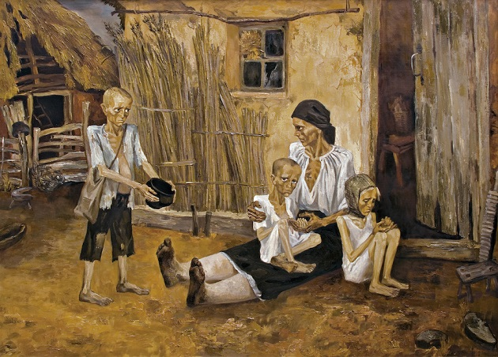
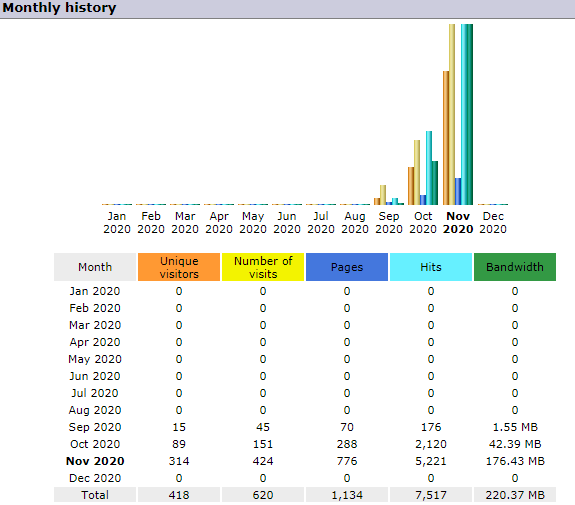
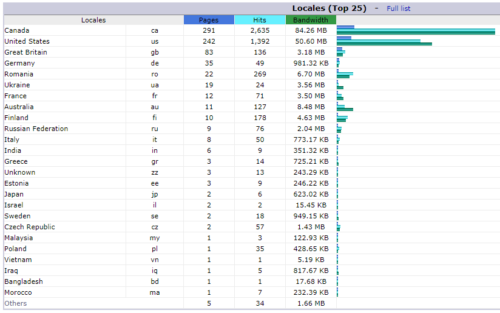

BC Goy News - Growth and Purpose
November 22nd, 2020
I think the single event that really got me to totally check out of Donor Approved News Organizations was the Syrian War. The one against ISIS, if you were confused. I remember how outright impossible it was to answer very simple, basic questions such as:
TDC_ARTICLE_START
- How much territory is controlled by x faction?
- And how is the map changing over time?
- What are the various factions?
- In an objective sense, what and who do they represent?
- What is the strength of each side, manpower, material, etcetera?
TDC_ARTICLE_STOP
What I realized is that these Propaganda Outlets are so totally unconcerned with informing the public, that a skeptical, critical reader simply cannot read through the lines in order to inform themselves. There is not enough actual real information contained within the virtual pages of whatever "news," organization you read to have yourself be informed. They simply do not inform, and this is by design.
 But more than misinforming you about some particular news event, what they want is to control the subject talked about. The fentanyl overdose of George Floyd is a fantastic example of this. For those who don't know, George Floyd was a career criminal, and failed pornstar, who was arrested by police in Minneapolis, where, in custody, he ingested his own stash of Fentanyl and killed himself.
Fentanyl Floyd was a nasty character, at one point being put in jail for breaking into a pregnant womans home in search of drugs and money. In fact, he even put a loaded shotgun to her stomach. Truly the hero the people need right now.
And it would be easy to stop here, and understand that the reason the Propagandists don't talk about his criminal past, is because that's a losing issue for them. That doesn't fit the narrative. And this is true, and it's good if you thought of that before I brought it up. And it's good if you noticed that they totally lied about him being murdered by the cops, when in fact his autopsy showed him with four times the lethal level of Fentanyl, which he swallowed himself.
But more than misinforming you about some particular news event, what they want is to control the subject talked about. The fentanyl overdose of George Floyd is a fantastic example of this. For those who don't know, George Floyd was a career criminal, and failed pornstar, who was arrested by police in Minneapolis, where, in custody, he ingested his own stash of Fentanyl and killed himself.
Fentanyl Floyd was a nasty character, at one point being put in jail for breaking into a pregnant womans home in search of drugs and money. In fact, he even put a loaded shotgun to her stomach. Truly the hero the people need right now.
And it would be easy to stop here, and understand that the reason the Propagandists don't talk about his criminal past, is because that's a losing issue for them. That doesn't fit the narrative. And this is true, and it's good if you thought of that before I brought it up. And it's good if you noticed that they totally lied about him being murdered by the cops, when in fact his autopsy showed him with four times the lethal level of Fentanyl, which he swallowed himself.
Career Criminal overdoses on Fentanyl
But to even pay attention to the lies is to miss the point, and to pay attention to them shielding the public from his criminal, lowlife past, is to miss the point. Let's say that Fentanyl Floyd really was arrested for possession, like he was, and then he chimped out, which he did, and then the police sat on his neck, which they did, and this killed him, the lie that we're pretending was true. Let's just pretend all that is true.
This is barely even a local news story, and that story is titled "Career Criminal killed in Police Custody." And is right next to the results of the local kitten show. I hear Sir Fluffy held off a late charge from Whiskers and Mr Muffins to win it all.

Sir Fluffy KNOWS he's beautiful
As I stated earlier, it is not simply their lies, it is their ability to control the subject matter. Of the two, the second is far more important. You will never see any serious discussion of any real societal problem, or damaging news from the CBC, the NYTimes, or whatever supposedly serious Propaganda Outlet you think of.
And as bad as it is for Americans, it is even worse for Canadians. It is nearly impossible for a Canadian to become informed as to what is happening in their province, their country, and the world at large. In fact, I would say that it is utterly impossible unless you have a genuine, dedicated staff with dozens of employees. Willing and ready to outright break "hate speech," laws, in order to both do the investigative journalism and subsequent writings to really inform the public.
But that's being really informed, most people have absolutely no idea what's going on here, important or otherwise. On top of this, most people can see that the propaganda outlets they are supposed to rely on are nothing more than propaganda outlets, that do not inform them, and check out. Some Kosher News Sites exists, such as Rebel News, run by Zionist Ezra Levant, but these exist to catch the Goy-Peasant rejecting the blue pill, and give them some system-approved fake opposition.
Ultimately, most people my age don't read any news at all, Fake Opposition included. And this is good and bad. What Globo Homo Schlomo would like is for you to be misinformed, and well programmed. But they'll settle for you simply being uninformed and disorganized. After all, if the goy-peasants don't know, and can't get organized, anything can be done to them.
Pictured: Holodomor
It's important to understand that you are a peasant. Representative Democracy is a system that exists to ensure that big money donors are well represented, and your will is completely ignored. This system that exists to ensure that you have absolutely no say over policy, and that someone who represents you can never reach office.
In order to combat this system, eventually what is needed is political action, specifically through a political party. And I say through a political party, because I am not rich, and I assume those reading this are also not rich. If you had money, you could simply purchase a politician. Listening to someone like Kari Simpson of Culture Guard, a woman who has done lots of great work documenting the tranny abuse here in BC, it's amazing just how cheap politicians really are. Though they are still out of your price range of course, goy.
The first step in performing political action as a community, is having a community. This era of massive social atomization is terrible, although it has a few moderate upsides. The massive censorship we have experienced online is no doubt harmful, but compared to the completely walled in system that is cable television, it's still the greatest gift we could have been given. I have created BCGoyNews because I want to create a following of our goys, so we can eventually begin to do political action.
To this end, I have been extremely encouraged and excited by the growth in the site. BCGoyNews was launched in early September, a technical horrorshow and a content desert. I quickly added quite a bit more content to the site, and midway through this month I fixed all of the crippling technical issues, although the site obviously needs quite a lot of work. I have also started advertising specific articles on TRS, and twitter. I can definitely see the highest number of article views come from these articles, but I have been extremely encouraged to see the other articles getting a consistent amount of views.
Pictured: Encouraging monthly growth!
It is also extremely encouraging to see that almost half of the entire traffic comes from Canada. This is great, because I am trying to do actual political action, not simply get eyeballs here to drive ad revenues. In fact, this is not the sort of site that will ever have advertizements, at least not paid.
Where the visitors come from
The next step, and I believe that the site is ready, is to start posting news stories on 4Chan. I did this with my BitChute channel, when I investigated the "skidmark of hate," which you can read about here. The main video that I made of this incident, which you can watch here, got up to 699 views, which is quite a lot for me, considering that my previous views were around 20-30. In fact, the entire channel got a nice bump from that video, and previous videos have now grown in views to at least 3x that number. I wasn't ready to use 4Chan when the site was younger, because I felt like the site was simply too bad to get repeat viewers. Then, I wasn't ready to use 4Chan, due to the Great American Puppet Show making that site unusable. While there is still some of that idiocy shitting up the site, I think that now is the time to start posting links to my articles there, considering the wonderful response earlier.
And 4Chan solves a bit of the problem that this site has, allowing you, the reader, an opportunity to network with others, and not simply be an "redpilled individual," utterly unable to affect change in the world. For now, interaction on 4Chan is the best I can do, since I cannot expect everyone to shell out for a TRS subscription, nor can we be justified in taking over their forum.
For now, all you have to do, is continue reading. I really mean it when I say I value my readership, and want the best for both of us.
The future looks bright indeed.

But more than misinforming you about some particular news event, what they want is to control the subject talked about. The fentanyl overdose of George Floyd is a fantastic example of this. For those who don't know, George Floyd was a career criminal, and failed pornstar, who was arrested by police in Minneapolis, where, in custody, he ingested his own stash of Fentanyl and killed himself.
Fentanyl Floyd was a nasty character, at one point being put in jail for breaking into a pregnant womans home in search of drugs and money. In fact, he even put a loaded shotgun to her stomach. Truly the hero the people need right now.
And it would be easy to stop here, and understand that the reason the Propagandists don't talk about his criminal past, is because that's a losing issue for them. That doesn't fit the narrative. And this is true, and it's good if you thought of that before I brought it up. And it's good if you noticed that they totally lied about him being murdered by the cops, when in fact his autopsy showed him with four times the lethal level of Fentanyl, which he swallowed himself.